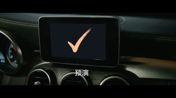
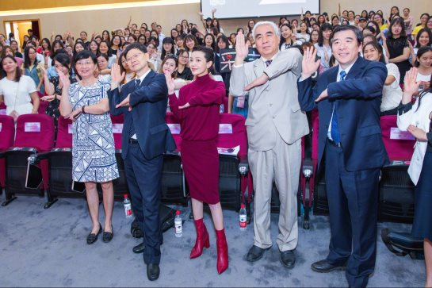
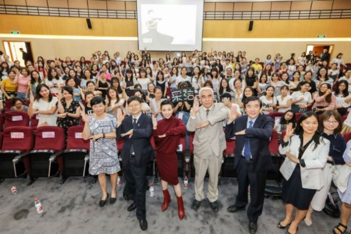

活动资讯
- 公益视频
- 公益直播
- 活动报道
活动视频
- 15秒疾病教育篇
- 15秒悬疑篇
-
 15秒情感篇
15秒情感篇
-  MV
公益视频
尚未发布，敬请期待
那些时代，早已远去。未来，却变幻莫测、充满未知。这就是我必须接受的命运吗？趁年轻 预防宫颈癌 即刻行动 保护她
 15秒疾病教育篇
MV
15秒疾病教育篇
MV
活动报道
-

明星榜样｜从戏中饰演宫颈癌患者到现实亲身宣教宫颈癌
被粉丝热赞为“公益鸠”的郭采洁最近可谓行程满满，前脚刚在慈善芭莎夜上与“小时代姐妹花”合体做公益，9月12日又马不停蹄地出现在上海大学进行宫颈癌预防行动的宣传教育。从戏中角色患上宫颈癌，到现实生活中宣教宫颈癌疾病，郭采洁不得不说是一个做公益好榜样！化身宫颈癌预防行动宣教大使 助力女性远离子宫颈癌9月12日下午，郭采洁身穿紫红色毛质长裙，搭配同色系短皮靴，干练整洁地现身在上海大学，参加中国宫颈癌预防控制科普项目的校园行活动。同日晚上，中国宫颈癌预防控制科普项目在上海和平饭店启...
-

中国宫颈癌预防控制科普项目,校园行（上海大学）活动启动
2017年9月12日，中国宫颈癌预防控制科普项目校园行活动在上海大学启动。中华预防医学会副会长兼秘书长杨维中，上海市卫生计生委副主任吴凡，上海市学校卫生保健协会副会长丛海鹰，上海市教委体育卫生艺术科普处时多，上海大学工会常务副主席、妇委常务副主任顾红，上海大学校医院院长周弘，中国宫颈癌预防控制科普项目专家委员会专家代表、媒体代表和学生代表500余人参加了活动。宫颈癌是严重威胁女性健康的常见恶性肿瘤。我国宫颈癌每年新发病例10万，死亡病例3万，是15岁至44岁女性中第三大高发...
-
中国宫颈癌预防控制科普项目在沪启动
2017年9月12日，中国宫颈癌预防控制科普项目启动会在上海和平饭店隆重举行。中华预防医学会王陇德会长、国家卫生计生委妇幼健康服务司宋莉副司长、上海市卫生计生委王磐石副主任、中华预防医学会副会长兼秘书长杨维中等有关单位部门领导，中国宫颈癌预防控制科普项目（以下简称“项目”）专家委员会专家代表以及媒体代表100余人参加了本次会议。宫颈癌是严重威胁女性健康的常见恶性肿瘤。我国宫颈癌每年新发病例10万，死亡病例3万，是15岁至44岁女性中第三大高发癌症。同时，宫颈癌是可以通过有效措...